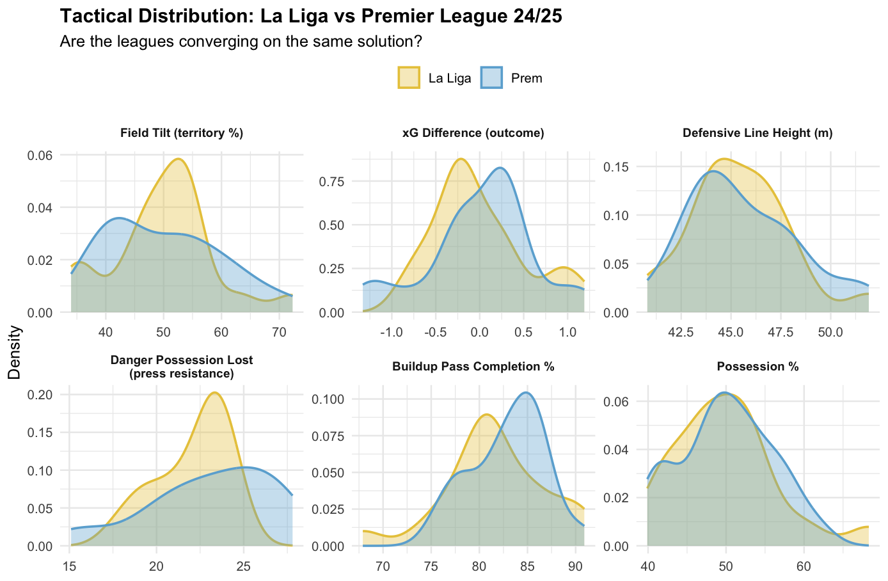
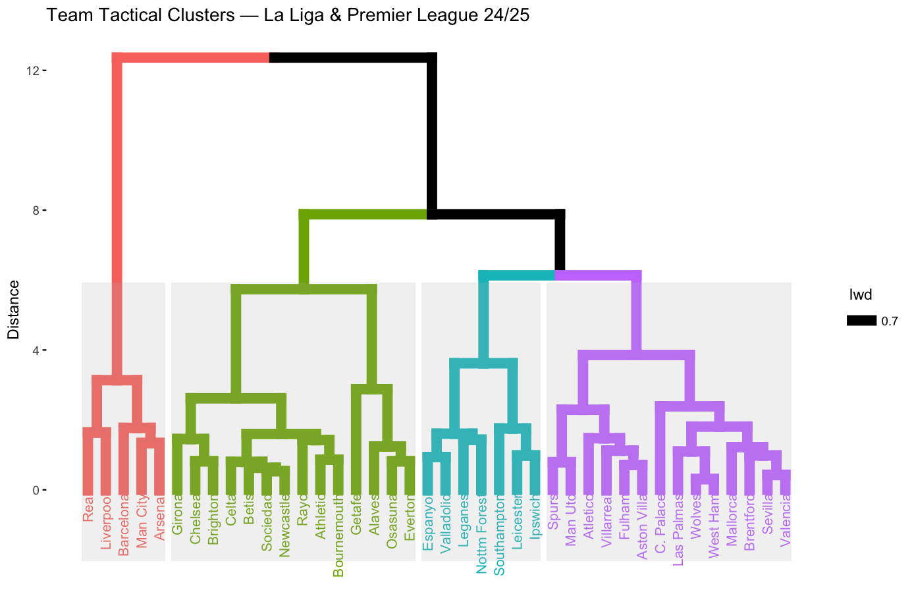
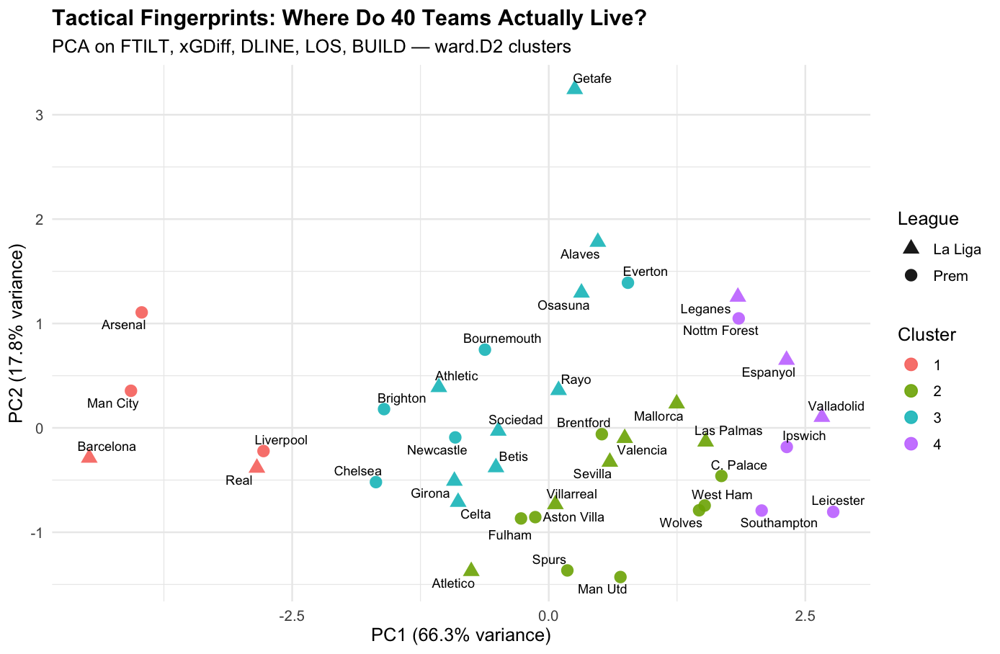
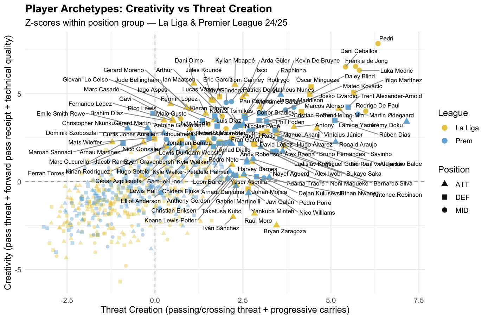
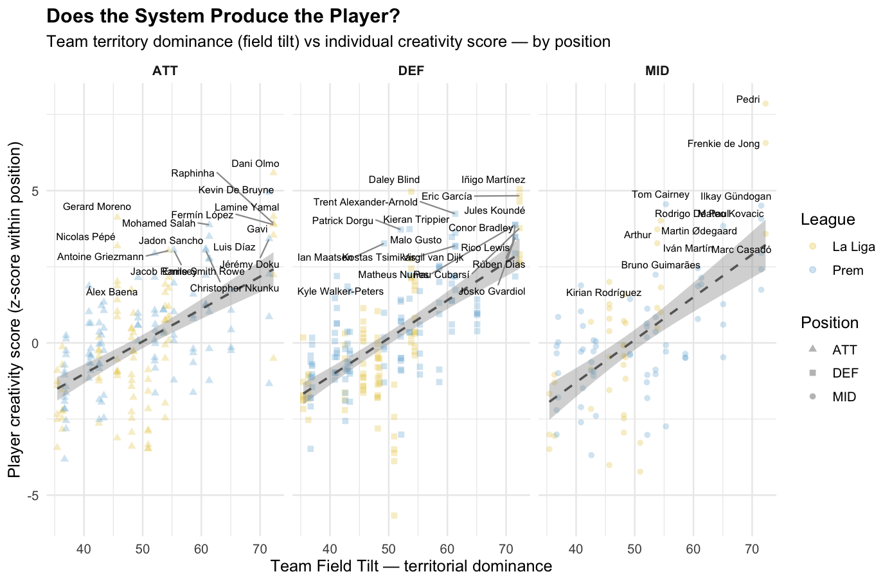
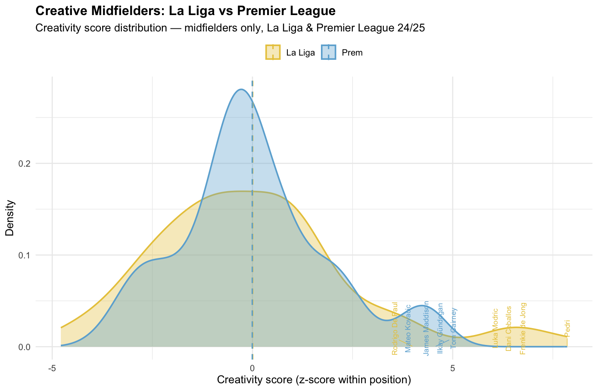
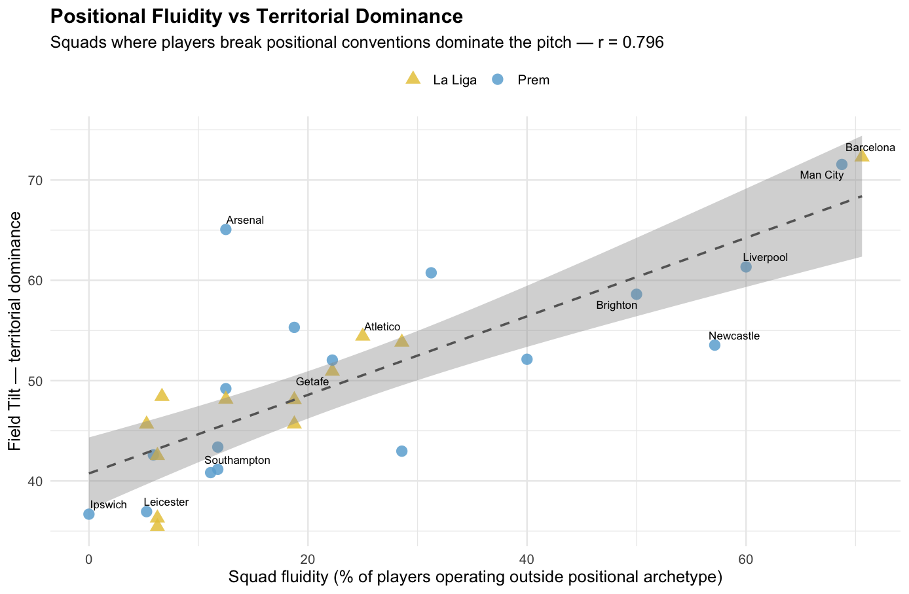
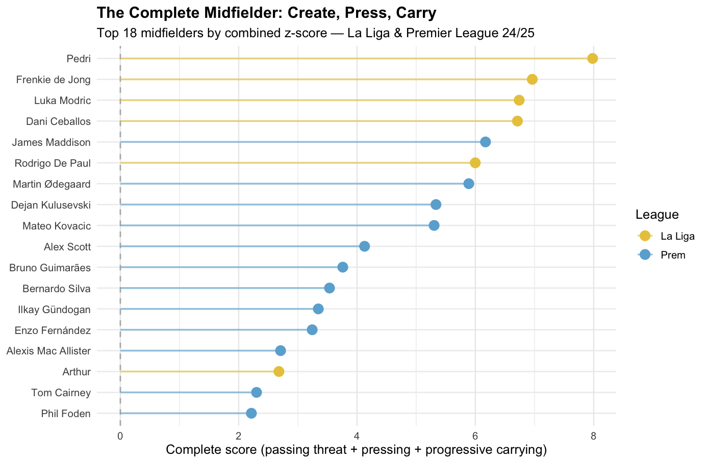
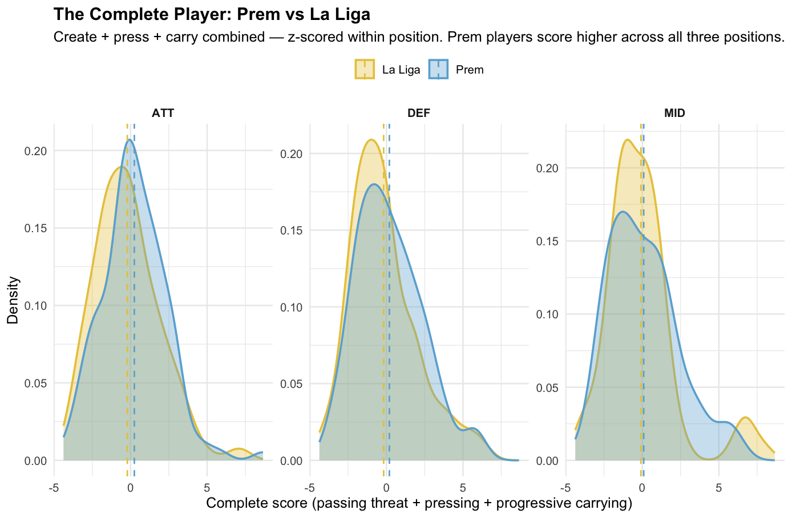

The Premier League is the biggest football league in the world. Ultra Competitive, fast, and totally optimized… but lacking expression and entertainment. That is what sustained competition tends to do to a sport over time.
La Liga moves at a different pace. A slower one in exchange for that which the premier league lacks. home to FC Barcelona, a club that has spent the better part of a century insisting that winning and playing well are the same goal. Whether that still holds up is part of what this project wanted to find out, using a full season of advanced team and player data across both leagues.
The question underneath all of it: what is the state of elite football right now?

The two leagues measured across six tactical dimensions. Most of what you would expect to find different turns out to be the same.
Six variables were chosen to capture the most important tactical dimensions. Field tilt measures what share of all final-third touches belong to your team. If both sides touched the ball equally in attacking areas it would sit at 50%. Barcelona finished the season at 72%, meaning nearly three quarters of all activity in dangerous areas happened in the opponent's half. It captures territorial pressure better than possession alone because it tells you not just who has the ball but where the game is actually being played. Outcome quality is the difference between the quality of chances a team creates and the quality it concedes — a more honest read on performance than the scoreline. Defensive line height tells you how far up the pitch a team defends without the ball. Buildup quality measures pass completion outside the final third. Press resistance measures how often a team loses the ball in dangerous positions near their own goal under pressure from the opponent.
The initial assumption was that these two leagues would look fundamentally different on a tactical level. On most dimensions, they do not. Possession, territory, defensive line height, and outcome quality overlap so closely the two leagues are nearly indistinguishable. The convergence runs deeper than most coverage of either league tends to acknowledge.
Two dimensions break the pattern. Buildup quality varies nearly twice as much in La Liga, reflecting a wider range of approaches to getting the ball out of the back. And press resistance is the only dimension with a statistically significant difference between the leagues (Levene's test, p = 0.048). The Prem spreads from Arsenal at 15.1 to Crystal Palace at 27.8. These are clubs that have arrived at very different answers to the question of how much ball they are willing to give away in dangerous areas, and the spread reflects a league that has not converged on a single answer to that question the way La Liga mostly has.
Where the leagues do differ, it comes down to how teams handle the ball under pressure and how they organise without it. Those two things shape what players within each system are able to produce.

Forty teams, four groups. The elite separate from everyone else early, and by a wide margin.
This chart groups all 40 teams by how tactically similar they are across those same five variables. Teams that branch together low on the vertical axis are very alike. Teams that only connect high up are very different. The height of the join is a measure of distance between them.
Four clusters emerge. Barcelona, Real Madrid, Man City, Arsenal, and Liverpool separate from the rest early and by a wide margin. The gap at the top of the chart reflects what the eye already senses watching these teams week to week. They are not just performing better. They are operating with a fundamentally different tactical profile to everyone else in both leagues combined.
Below them, a mid-table cluster mixes English and Spanish clubs in roughly equal measure, suggesting that average-quality football looks broadly similar regardless of which league it comes from. Below that, a lower-table cluster that skews heavily Prem. Each group tells a part of the same story — of a game gradually sorting itself into those who have found a way and those still looking for one.

A map of tactical space across both leagues. Further left means more dominant. The vertical axis is where the real story emerges.
Barcelona and Arsenal share a cluster. Spatially they are pulling apart. Same destination, completely different journeys.
The dendrogram groups teams. This chart places them in space. Principal component analysis takes all five variables and finds the two directions that explain the most variation — think of it as a map where distance means difference. The horizontal axis captures 66% of all variation and maps onto overall tactical dominance. Barcelona sits furthest left in the entire dataset. Man City, Arsenal, Liverpool, and Real Madrid follow. The Prem's lower half bunches toward the right, tactically similar enough that the differences between those clubs are modest.
The vertical axis is where the real story lives. Arsenal and Barcelona share a cluster horizontally — both are dominant — but they achieve that dominance in opposite ways. Arsenal's system is built around one of the most extreme defensive lines in European football. That high line compresses the space available to opponents, forces turnovers in dangerous areas, and allows the team to press in coordinated waves. When it works, it manufactures chaos for the opponent without giving up control. Barcelona's approach inverts this logic. Rather than pressing to win the ball back, they keep it away from danger entirely. At 72% field tilt, the opposition rarely got close enough to the goal to threaten it. Domination through possession rather than pressure. One system is a trap. The other is suffocation. Both produce the same outcome on the map — the furthest left — but the football they produce looks and feels completely different.
What the rest of the map shows is equally revealing. The dense cluster in the middle — clubs from both leagues, broadly similar in profile — reflects teams that have not yet committed to a clear identity. They press some of the time, possess some of the time, defend deep some of the time. The result is tactical variety at the individual match level that averages out into sameness in the aggregate. The teams at the edges of this map are there because they made a choice and stuck to it.
Barcelona's identity did not come from a tactical manual. It came from a philosophy about what football should look like — technical mastery, respect for the ball, pass and move, individual brilliance within collective structure. Players who come through La Masia absorb this as instinct before they absorb it as instruction. When Pep Guardiola brought elements of that philosophy to the Prem, clubs across the league spent years trying to copy the surface — the high line, the pressing triggers, the positional structure — while missing what was underneath it. The result is a league that has converged tactically without converging culturally, and it shows in the data. The middle of the map is crowded because everyone is trying to solve the same problem the same way.
The clubs that stand out are the ones that stopped trying to solve it that way. Individuality in football, at the club level, is not just aesthetically interesting. According to this data, it is one of the strongest predictors of success.

Every player in both leagues plotted by two scores. The top right is where the most interesting players live.
Moving from teams to players, two composite scores were built to capture what individual players are actually contributing. The creativity score combines how dangerous a player's passes are on average, how often they receive progressive passes from teammates, and their overall pass completion. Together these capture how much a player moves the ball forward in a controlled and dangerous way. The threat creation score combines passing and crossing threat with progressive carrying — how far and how often a player drives the ball forward themselves. Both scores are calculated relative to other players in the same position, making the comparison fair across roles. A defender who passes well for a defender scores just as high as a midfielder who passes well for a midfielder.
The top right is where players who score highly on both measures end up. That space is mostly yellow, La Liga. Pedri sits at the furthest point, with the highest creativity score of any midfielder in both leagues and a threat creation score in the top three at his position. He does not lead any single metric. He leads in the combination, and that combination is genuinely hard to find. What makes him unusual is that he does both things at an elite level simultaneously — he is creative in a technical sense and threatening in a physical one, and the two reinforce each other.
The best Prem midfielders are present and visible — Ødegaard, Maddison, De Bruyne in the upper half. De Bruyne comes closest to the La Liga standard, which makes sense given where he plays. The gap between the two leagues in that top corner is consistent across the whole position group, not just a few standout individuals. It reflects a structural difference in what each league's systems allow its midfielders to become.
Trent Alexander-Arnold registers as a defender who scores alongside elite midfielders on both axes. His profile does not fit neatly into his listed position, and the data reflects that clearly. Doku sits alone on the far right, lower on creativity but generating more direct threat through carrying than anyone else in the dataset. A completely different kind of contribution to any other player on the chart.

Team dominance vs individual creativity, split by position. The upward slope in each panel is the finding.
Players in the most dominant systems average a creativity score of 2.54. Players in the least dominant average -1.21. The gap between those numbers is largely the system.
The player archetype chart raises a natural question: are creative players simply the product of creative systems? This chart tests it directly. The horizontal position of each dot shows how dominant their team is. The vertical position shows how creative that individual player is. The three panels split by position so the relationship can be examined separately for attackers, defenders, and midfielders.
The answer is yes, substantially. The more dominant a team, the more creative its players tend to be, across all three positions. The gap between the top and bottom clusters is large enough to matter. Transfer valuations, reputations, national team selections — these are all shaped by individual output that is itself shaped by team context. The system is doing a significant amount of the work we tend to attribute to the individual alone.
Pedri and Frenkie de Jong are both well above the trendline even after accounting for how dominant Barcelona are. The system gives them a platform and they exceed what the platform alone would predict. The credit belongs to both. Arsenal's players sit close to where the model would expect for a team at their level. Ødegaard is the clearest exception.
Some of the most interesting names on this chart are the ones who score well on creativity while playing for mid-table clubs. Daley Blind at Girona. Bruno Guimarães at Newcastle. Players whose output the model did not predict from their surroundings. The system explains a lot. It does not explain everything.

Creativity score distribution for midfielders only. Both leagues, same axis.
One of the most common claims in football conversation is that La Liga produces better creative midfielders. This chart isolates midfielders from both leagues and compares their distributions directly. The shape matters as much as the average. A narrow, tall curve means most players cluster around the same value. A wide, flat curve with a long tail means more players at the extremes.
The Prem distribution is tighter and peaks closer to average. La Liga's is wider with a longer tail extending to the right. Both leagues produce creative midfielders. The claim holds, but only at the top end. The gap is in ceiling, not count. And that ceiling, as the previous chart showed, is partly a product of the systems these players operate in.
Tom Cairney at Fulham appearing near the top of the Prem's tail is one of the more unexpected findings in the data. His creativity score places him alongside players with a much higher profile. Fulham under Marco Silva have built a system that rewards exactly the kind of passing quality and positional awareness this score captures. The right environment surfaces things the market has not yet priced in.

Squad fluidity vs territorial dominance. One dot per team.
The strongest correlation in the dataset. The more players in a squad who regularly go beyond their listed position, the more that team dominates the pitch. r = 0.796.
This finding came from looking at the data without a specific question in mind. Positional fluidity measures the share of players in a squad who regularly do things their listed position would not predict — an attacker who completes as many progressive passes as a midfielder, a defender who carries the ball forward as often as a winger, a midfielder who scores as frequently as a striker. The threshold for each was set at 1.5 times the median value for that metric in that position group.
The correlation between squad fluidity and field tilt is 0.796. With match outcome quality it is 0.678. These are the strongest relationships in the dataset, stronger than possession, line height, or any individual tactical variable. Barcelona are the most fluid squad in both leagues at 70.6%, followed by Man City at 68.8% and Liverpool at 60%. Ipswich and Leicester anchor the other end at 0% and 5%. The relationship holds across both leagues and across every level of the table.
Arsenal sit noticeably above the trendline. They achieve high territorial dominance with positional fluidity of around 12.5%, with every player operating within a clearly defined and tightly organised role. It is a different path. The fact that it works at all is interesting on its own — it suggests that coherence and structure can substitute for fluidity if the system is well-designed enough. But Arsenal are the clear exception in both leagues. The general pattern is strong.
What this points to is a shift in what elite football actually requires from players. Defenders who drive forward, wide attackers who win the ball back deep, midfielders who contribute in the final third — these have become the expectation at the top level, not the exception. The clubs that are built around players who can do these things are the clubs that dominate territory. The clubs that are not are the ones in the middle of the map.

A combined score of creating, pressing, and carrying — by position and league. The dashed lines mark each league's average.
The fluidity chart looks at teams. This one looks at individual players and asks: which league produces more well-rounded players? A completeness score was built combining three things. Passing threat — how dangerous a player's passes are on average. Defensive actions in the opponent's half — how much a player contributes to pressing and winning the ball high up the pitch. Progressive carrying — how often and how far a player drives forward with the ball. A player who contributes meaningfully across all three scores high. A player who is elite at one thing but absent in the others scores lower, even if they are exceptional at that one thing.
Across all three positions, Prem players score slightly higher than La Liga players on this combined metric. The difference is modest but consistent. The Prem tends to produce players who contribute across multiple dimensions simultaneously. La Liga tends to produce players who are more specialised, often exceptional at their primary role without adding much elsewhere. This maps onto what the previous charts showed at the team level: the Prem has converged on a style that demands more from each player, while La Liga has preserved the conditions for a purer kind of individual excellence.
The midfielder panel makes this clearest. La Liga has a longer tail to the right, driven by a small group of elite creative midfielders. The main body of the Prem distribution sits slightly further right. The typical Prem midfielder contributes across more dimensions. The typical La Liga midfielder focuses on fewer things, but occasionally one of those things reaches a level that is hard to find anywhere else.

Top 18 midfielders by combined create, press, carry score. Yellow is La Liga, blue is Prem.
The top four are all La Liga. Pedri leads by a distance. He scores highest on a metric that combines creative output, pressing in the opponent's half, and forward ball-carrying. He is the most creative midfielder in both leagues and also the most complete. The same qualities that make him exceptional in one dimension show up across the others. That is rare. Most players who lead on creativity do so by sacrificing something elsewhere. Pedri does not.
From fifth place down the list is mostly Prem. Maddison, Ødegaard, Kulusevski, Kovacic, Bruno Guimarães, Bernardo Silva. The Prem has complete midfielders. It just does not produce the same ceiling at the very top. Reading the last two charts together, the picture becomes cleaner: La Liga builds specialists who occasionally become exceptional. The Prem builds contributors who rarely reach the same extreme — but across the board, they do more.
Alex Scott at Bournemouth ranking tenth is worth pausing on. He presses at one of the highest rates in the dataset for a midfielder while maintaining solid creative and carrying output. Bournemouth are not a club anyone writes essays about. But their midfield, on this measure, belongs in the conversation. That kind of finding does not come from watching highlights. It comes from the data.
The state of elite football in 2025 is a landscape where the middle is crowded and the edges are where the interesting things happen. Across 40 teams and 689 players, the most consistent finding is that tactical identity — knowing what kind of football you want to play and building everything around it — predicts success more reliably than any single metric. Field tilt, fluidity, press resistance, buildup quality: these numbers are not causes. They are symptoms of clubs that have made a decision about who they are.
Barcelona have been making that decision for a long time. Their way of playing is not a tactical system in the conventional sense. It grew from a philosophy about what football should look like — technical mastery, collective movement, respect for the ball, individual expression within a shared structure. The players who come through their academy absorb this before they absorb anything else. It shows in the data at every level, from team fingerprints to individual player profiles. A club that knows who it is produces players who know what they are supposed to do, and those players tend to do it exceptionally well.
The Premier League tells a different story. Hyper-competitive, brilliantly organised, and increasingly homogeneous. The tactical convergence in the data is real. Most Prem clubs look similar in aggregate because most Prem clubs are trying to win the same way. That produces a thrilling league table and a less thrilling product. The exceptions — the clubs that have found something of their own — are the ones that stand out in the data. Liverpool's fluidity. Arsenal's structure. Bournemouth quietly producing complete midfielders. Fulham surfacing Tom Cairney.
The players who appear most interesting in this data are often not at the biggest clubs. Daley Blind at Girona. Bruno Guimarães at Newcastle. Alex Scott at Bournemouth. Players whose output exceeded what their environment would predict, at clubs that found something real without the resources to make it obvious. The game has always had room for these players. The data just makes them easier to find.
Most clubs are trying to solve football. A few are doing something else entirely. The ones doing something else tend to be the ones worth watching.